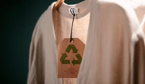
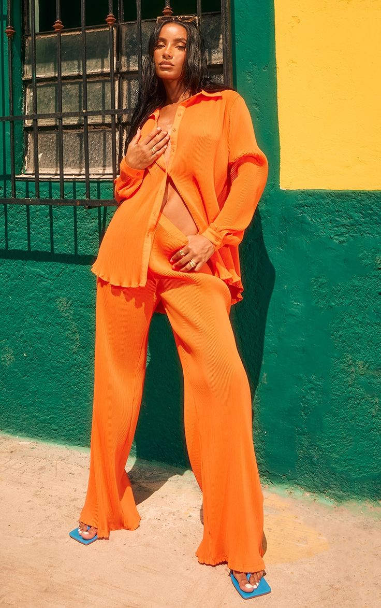
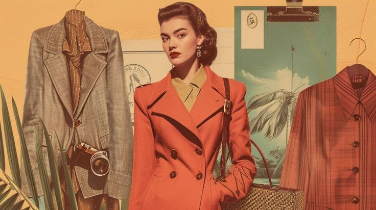

The fashion world is constantly evolving, and as we head into 2024, several new trends are emerging that are sure to make an impact. Whether you’re a fashion enthusiast or just looking for some fresh ideas, these are the top five trends you’ll want to keep an eye on.
Sustainability continues to be at the forefront of the fashion industry. Brands are increasingly turning to eco-friendly materials, ethical production methods, and upcycled clothing to meet the growing demand for conscious fashion.


2024 is all about standing out, and bold, vibrant colors and playful patterns are making a strong comeback. Expect to see bright hues like electric blue, neon green, and fiery red dominating the runway.
From 70s boho chic to 90s grunge, vintage-inspired pieces are a big hit this year. Mixing old-school fashion with modern elements creates a timeless and unique look.
Oversized clothing, from baggy jeans to giant jackets, continues to be a staple in fashion. This trend combines comfort with style, making it a must-have in every wardrobe.
As technology becomes more integrated into our daily lives, techwear — clothing that incorporates futuristic designs and functionality — is gaining traction. Look out for high-tech fabrics, waterproof materials, and designs with a sleek, utilitarian feel.